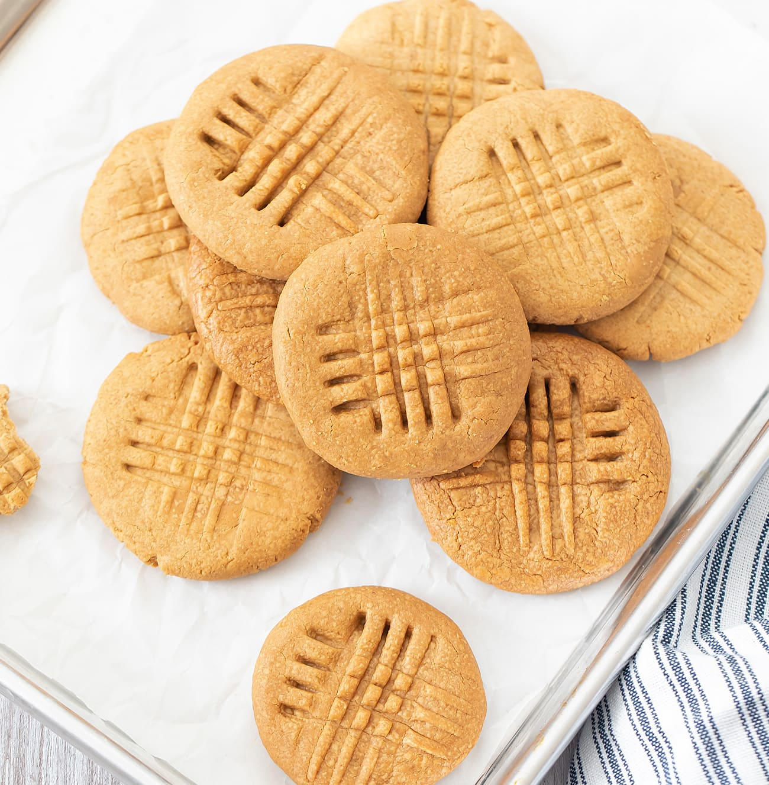

Peanut Butter Cookies

Rich and Chewy Peanut butter Cookies
Do you love peanut butter? Well, we do too! These tasty treats are a perfect desert after any meal.
Crispy yet amazingly chewy, these cookies are the perfect compliment to a tall glass of milk.
Ingredients
- 1 1/2 c. all-purpose flour
- 1/2 tsp. baking soda
- 1/4 tsp. salt
- 1/2 c. butter, softened
- 1/4 c. granulated sugar
- 3/4 c. packed brown sugar
- 3/4 c. creamy peanut butter
- 1 large egg
- 1 tsp. vanilla extract
- 3 Tbsp. granulated sugar (optional)
Steps
- Preheat oven to 350° F.
- In a large bowl, whisk together the flour, baking soda and salt; set aside.
- In your stand mixer, beat the softened butter and sugars on medium speed for about
1 - 2 minute or until combined and creamy. Remember to periodically scrape down
the sides of the bowl to make sure everything is getting combined.
- Mix in the peanut butter, egg and vanilla until smooth and completely combined. Scrape
down sides as needed.
- Add flour mixture, a little at a time, just until well blended. Again, remember to
scrape down the sides of the bowl as you go.
- Place the optional 3 Tbsp of granulated sugar in a small bowl. Place parchment paper
on a large baking sheet. Scoop out dough (about 1.5 tablespoons for each cookie) and
use your hands to roll each cookie into a ball. Roll each cookie (if desired) into the
granulated sugar, then place onto the baking sheet, about 2 inches apart. Before baking,
gently press down on each cookie with a fork to make a criss-cross pattern (first one way,
then the other).
- Bake 10 - 12 minutes or until the tops of the cookies are set. Remove from the oven and
let them cool on the cookie sheet for 5 - 10 minutes before carefully removing them
to a cooling rack. Let cool completely. Cookies can be stored in an airtight container
for up to 1 week.
Home